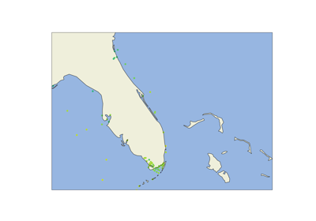

National Data Buoy Center (NDBC)¶
Examples of requesting data from the National Data Buoy Center latest and realtime data sources.



NDBC Latest Data Request
Examples of requesting data from the National Data Buoy Center latest and realtime data sources.